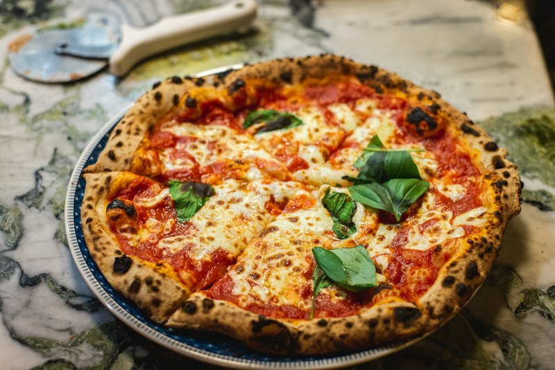
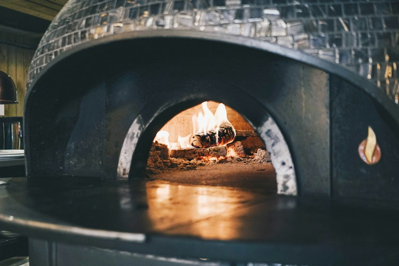

Farinha Italiana 00
Importada da Itália, moída finamente para proporcionar uma massa leve, elástica e de fácil digestão.
Massa artesanal com fermentação lenta de 48 horas, farinha italiana pura, molho com tomates pelados San Marzano e o inconfundível aroma da lenha a 450°C.

O segredo por trás do sabor inigualável e da borda crocante e aerada
Importada da Itália, moída finamente para proporcionar uma massa leve, elástica e de fácil digestão.
Processo lento com levain biológico, resultando em aromas complexos e textura incrivelmente aerada.
Tomates colhidos em solo vulcânico, naturalmente doces, sem acidez artificial e temperados à mão.
Pizzas prontas em apenas 90 segundos com calor intenso de 450°C, criando a autêntica bordinha tostada.
Fundada em 2014, a Estaleiro Pizzaria nasceu do fascínio pelas receitas clássicas do sul da Itália combinadas com a hospitalidade brasileira. Cada disco de pizza é aberto manualmente pelas mãos de nossos pizzaiolos experientes, sem rolo e sem pressa.
Nosso forno a lenha trabalha em temperatura constante acima de 400°C para garantir bordas altas, macias por dentro e crocantes por fora, com aquele toque defumado inigualável.
